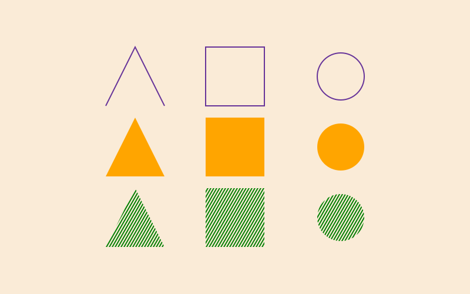
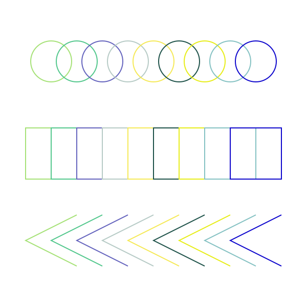

Paths versus polygons
When drawing in Luxor you'll usually be creating paths and polygons. It can be easy to confuse the two.
Drawing graphics as paths
Luxor draws graphics onto the current drawing using paths.
There's always a current path. It starts off being empty.
A path can contain one or more sequences of straight lines and Bézier curves. You add straight lines to the current path using functions like line(), and add Bezier curves using functions like curve(). You can continue the path at a different location of the drawing using move().
Luxor keeps track of the current path, the current point, and the current graphics state (color, line thickness, and so on), in response to the functions you call.
When called, the following function creates a single path consisting of three separate shapes - a line, a rectangular box, and a circle. The move() function as used here is essentially a "pick up the pen and move it elsewhere" instruction. line() adds a straight line segment to the current path. The circle() function adds four Bézier curves that provide a good approximation to a circle.
function make_path() move(Point(-220, 50)) line(Point(-170, -50)) line(Point(-120, 50)) move(Point(0, 0)) box(O, 100, 100, :path) move(Point(180, 0) + polar(40, 0)) # pt on circumference circle(Point(180, 0), 40, :path)end
When you run this function, the path is added to the drawing. The top path, in purple, is drawn when strokepath() is called. Each of the three shapes is stroked with the same current settings (color, line thickness, dash pattern, and so on).
After calling the function again, the middle row shows the effect of calling fillpath() on the new path. It fills each of the three shapes in the path with orange.
Finally, after calling the function again, the clip() function turns this new path into a clipping path. The rule() function draws green ruled lines, which are clipped by the outlines of the shapes in the path.
You can construct paths using functions like move(), line(), arc(), and curve(), plus any Luxor function that lets you specify the :path ("add to path") action as a keyword argument or parameter.
Many functions in Luxor have an action keyword argument or parameter. If you want to add that shape to the current path, use :path. If you want to both add the shape and finish and draw the current path, use one of stroke, fill, etc.
After the path is stroked or filled, it's emptied out, ready for you to start over again. There's always a current path. But you can also use one of the '-preserve' varsions, fillpreserve()/:fillpreserve or strokepreserve()/:strokepreserve to continue working with the currently defined path after drawing it. You can also convert the path to a clipping path using :clip/clip().
As you can see, a single path can contain multiple separate graphic shapes.
Holes
If you want a path to contain holes, you add the hole shapes to the current path after reversing their direction. For example, to put a square hole inside a circle, first create a circular shape, then draw a square shape inside, making sure that the square runs in the opposite direction to the circle. When you finally fill the path, the interior shape forms a hole.
sethue("purple")circle(O, 200, :path)box(O, 100, 100, :path, reversepath=true)fillpath()" fill-opacity="1"/>
<path fill-rule="nonzero" fill="rgb(50.196078%25, 0%25, 50.196078%25)" fill-opacity="1" d="M 600 250 C 600 360.457031 510.457031 450 400 450 C 289.542969 450 200 360.457031 200 250 C 200 139.542969 289.542969 50 400 50 C 510.457031 50 600 139.542969 600 250 Z M 350 300 L 450 300 L 450 200 L 350 200 Z M 350 300 "/>
</svg>)
If you're constructing the path from simple path commands, this is easy, and the functions that provide a reversepath keyword argument can help. If not, you can do things like this:
circle(O, 100, :path) # add a circle to the current pathpoly(reverse(box(O, 50, 50)), :path) # create polygon, add to current path after reversingfillpath() # finally fill the two-part pathMany methods, including box(), crescent(), ellipse(), epitrochoid(), hypotrochoid(), ngon(), polycross(), rect(), squircle(), and star(), offer a vertices keyword argument. With these you can specify vertices=true to return a list of points instead of constructing a path.
Path objects
Sometimes it's useful to be able to create a path and save it for future use, rather than just construct it on the drawing. It might be useful to draw it later with different settings, and perhaps more than once. To do this, you can use the storepath() and drawpath() functions. And you can do some limited modifications of a stored path using movepath() and scalepath().
This code creates that uses storepath():
move(Point(-220, 50))line(Point(-170, -50))line(Point(-120, 50))move(Point(0, 0))box(O, 100, 100, :path)move(Point(180, 0) + polar(40, 0)) # pt on circumferencecircle(Point(180, 0), 40, :path)pathexample = storepath() # store the pathpathexample now contains the path, stored in a Luxor object of type Path. The current path is still present.
julia> pathexamplePath([ PathMove(Point(-220.0, 50.0)), PathLine(Point(-170.0, -50.0)), PathLine(Point(-120.0, 50.0)), PathMove(Point(-50.0, 50.0)), PathLine(Point(-50.0, -50.0)), PathLine(Point(50.0, -50.0)), PathLine(Point(50.0, 50.0)), PathClose(), PathMove(Point(220.0, 0.0)), PathCurve(Point(220.0, 22.08984375), Point(202.08984375, 40.0), Point(180.0, 40.0)), PathCurve(Point(157.91015625, 40.0), Point(140.0, 22.08984375), Point(140.0, 0.0)), PathCurve(Point(140.0, -22.08984375), Point(157.91015625, -40.0), Point(180.0, -40.0)), PathCurve(Point(202.08984375, -40.0), Point(220.0, -22.08984375), Point(220.0, 0.0))])It's now possible to draw this stored path at a later time. For example, this code builds a path, saves it as pathexample, then draws a number of rotated copies:
using Luxord = @draw begin move(Point(-220, 50)) line(Point(-170, -50)) line(Point(-120, 50)) move(Point(0, 0)) box(O, 100, 100, :path) move(Point(180, 0) + polar(40, 0)) circle(Point(180, 0), 40, :path) pathexample = storepath() # store the path rotate(-π/2) for i in -200:50:200 @layer begin randomhue() translate(0, i) drawpath(pathexample, :stroke) end endend
See also Stored paths.
Polygons
A polygon is a plain Vector (Array) of Points. There are no lines or curves, just 2D coordinates in the form of Points. When a polygon is eventually drawn, it's converted into a path, and the points are connected with short straight lines.
One important difference between polygons and paths is that paths can contain Bézier curves.
The pathtopoly() function extracts the current path that Luxor is in the process of constructing and returns an array of Vectors of points - a set of one or more polygons (remember that a single path can contain multiple shapes). Internally this function uses getpathflat(), which is similar to getpath() but it returns a Luxor path object in which all Bézier curve segments have been reduced to sequences of short straight lines.
So:
circle(O, 100, :path)p = pathtopoly()poly(first(p), :stroke)is more or less equivalent to:
ngon(O, 100, 129, 0, :stroke) # a 129agon with radius 100Luxor draws as many short straight lines as necessary (here about 129) so as to render the curve smooth at reasonable magnifications.
Note that methods to functions might vary in how they operate: whereas box(Point(0, 0), 50, 50) returns a polygon (a list of points), box(Point(0, 0), 50, 50, :path) adds a rectangle to the current path and returns a polygon. However, box(Point(0, 0), 50, 50, 5 ... ) constructs a path with Bézier-curved corners, so this method doesn't return any vertex information - you'll have to flatten the Béziers via getpathflat() or obtain the path with intact Béziers via getpath().